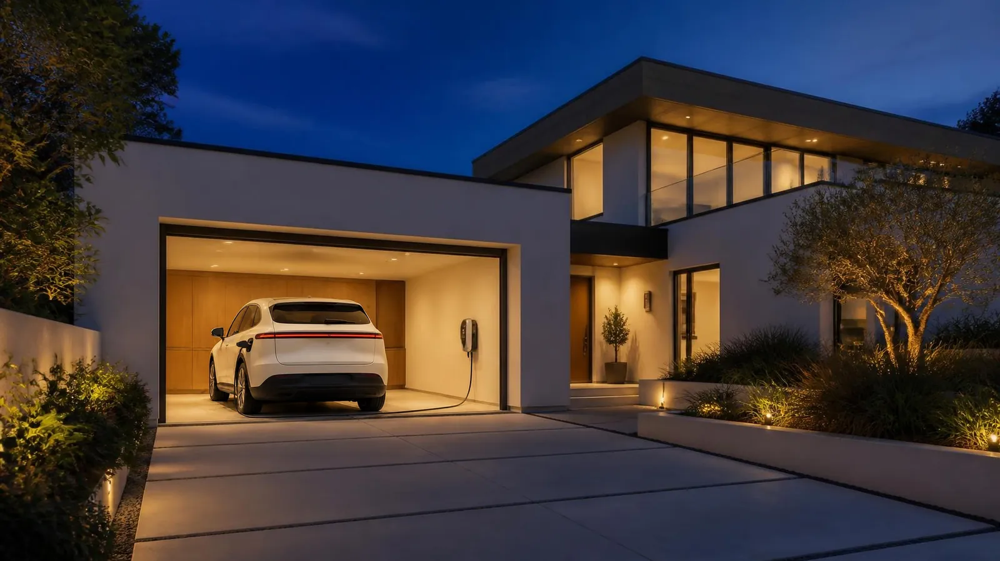
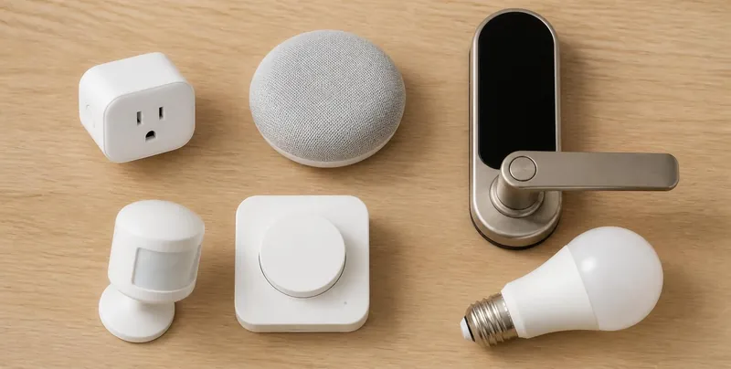
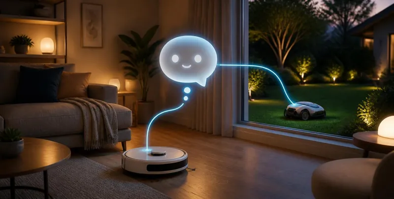

For Model Y & Model 3 owners
Make Your Tesla Work With Your Smart Home
Step-by-step guides for Apple Home, Alexa and Google Home: automations, voice control and the gear that ties them together.
✓ Free · ✓ Independent · ✓ Step by step
Tesla automations
Eight worked examples: garage on arrival, preconditioning, voice commands and more, built with the Tesla app, Shortcuts and the Home app.

Smart-home gear
HomeKit and Matter devices by category. Matter gear also works with Alexa and Google Home. Plus guides for Alexa and Google Home.

Grok Bots
AI assistants that can help run robot vacuums, mowers and other smart-home gear from chat.
What’s new
- Frozen charge cable? Thaw it with the Inlet Heater, don’t force it
- Trending Tesla + smart home ideas (Oct 21)
- Sentry Mode at home: let your home cameras take the night shift
- Scheduled Precondition: a warm Tesla on wall power every winter morning
- Cabin Overheat Protection: keep a parked Tesla from baking
Recommended gear
Floor mats, screen protectors, chargers and adapters, plus Echo, Nest and HomeKit starter kits: hand-picked for Tesla owners.
Free download: Tesla + Apple Home: 8 Automations
A polished PDF with all 8 worked examples. More guides on the Downloads page.
Start here
- Set up a home hub: HomePod or Apple TV for Apple Home, an Echo for Alexa, or a Nest Hub for Google Home.
- Update the Tesla app. On iPhone it adds Siri and Shortcuts actions. For Alexa or Google, see our voice guides.
- Pick one automation and build from there.